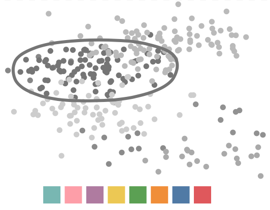

Optimizing Color Assignment for Perception of Class Separability in Multiclass Scatterplots


Authors. Yunhai Wang, Xin Chen, Tong Ge, Chen Bao, Michael Sedlmair, Chi-Wing Fu, Oliver Deussen, Baoquan Chen
Venue. TVCG (2018)
Abstract. Appropriate choice of colors significantly aids viewers in understanding the structures in multiclass scatterplots and becomes more important with a growing number of data points and groups. An appropriate color mapping is also an important parameter for the creation of an aesthetically pleasing scatterplot. Currently, users of visualization software routinely rely on color mappings that have been pre-defined by the software. A default color mapping, however, cannot ensure an optimal perceptual separability between groups, and sometimes may even lead to a misinterpretation of the data. In this paper, we present an effective approach for color assignment based on a set of given colors that is designed to optimize the perception of scatterplots. Our approach takes into account the spatial relationships, density, degree of overlap between point clusters, and also the background color. For this purpose, we use a genetic algorithm that is able to efficiently find good color assignments. We implemented an interactive color assignment system with three extensions of the basic method that incorporates top K suggestions, user-defined color subsets, and classes of interest for the optimization. To demonstrate the effectiveness of our assignment technique, we conducted a numerical study and a controlled user study to compare our approach with default color assignments; our findings were verified by two expert studies. The results show that our approach is able to support users in distinguishing cluster numbers faster and more precisely than default assignment methods.